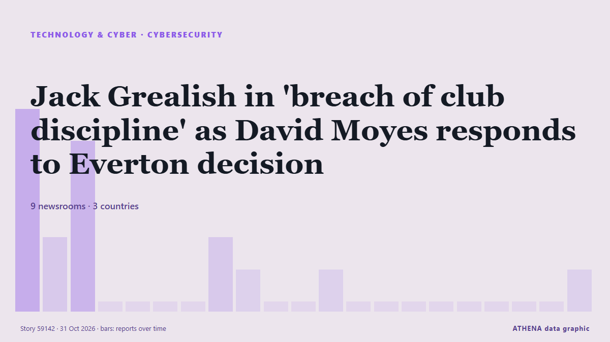

Кибербезопасность
| 18 окт. | 0 |
|---|---|
| 19 окт. | 0 |
| 20 окт. | 0 |
| 21 окт. | 0 |
| 22 окт. | 1 |
| 23 окт. | 1 |
| 24 окт. | 1 |
| 25 окт. | 0 |
| 26 окт. | 1 |
| 27 окт. | 0 |
| 28 окт. | 2 |
| 29 окт. | 2 |
| 30 окт. | 5 |
| 31 окт. | 0 |
Заголовки приводятся на английском языке, как они были опубликованы.

Jack Grealish in 'breach of club discipline' as David Moyes responds to Everton decision
Former Aston Villa skipper Jack Grealish was left out of Everton's squad for their match against Newcastle. из Birmingham Mail
Today in Denmark: A roundup of the latest news on Friday
New fees on non-EU parcels from next year, Denmark to take over presidency of Nordic Council and more news from Denmark on Friday. из The Local Denmark
Pentagon treating military base freezer malfunctions as suspected cyberattack, officials say
In at least one of the cases, the freezers' temperatures were cranked up overnight. из The Straits Times
Massive leak exposes 41,000 DHS workers and undercover ICE agents
The leak reveals undercover agents, surveillance groups, and sensitive DHS access. из Ars Technica
Cyberattack-hit GMO says website with purported customer info taken down
Cyberattack-hit Japanese internet service provider GMO Internet Group Inc. said Wednesday that a website where a hacker had posted wh. из Mainichi (English)
Councillors set to adopt code of conduct cracking down on ‘derogatory language'
The charter asks councillors to "treat all individuals with dignity, courtesy, and respect, regardless of political affiliation, role, or background". из The Herald (Scotland)
PHP2Shell security flaw forces thousands of Nepali websites offline
Government portals, Nepal Rastra Bank’s website and some digital services have been suspended as a precaution after two critical vulnerabilities were discovered in PHP. из The Kathmandu Post
Volt Typhoon Used Covert Silent Train Network in Four Zero-Day Exploitation Campaigns
The China-nexus cyber espionage group known as Volt Typhoon has been attributed to a now-disrupted covert access network dubbed Silent Train that has been put to use for zero-day exploitation and… из The Hacker News